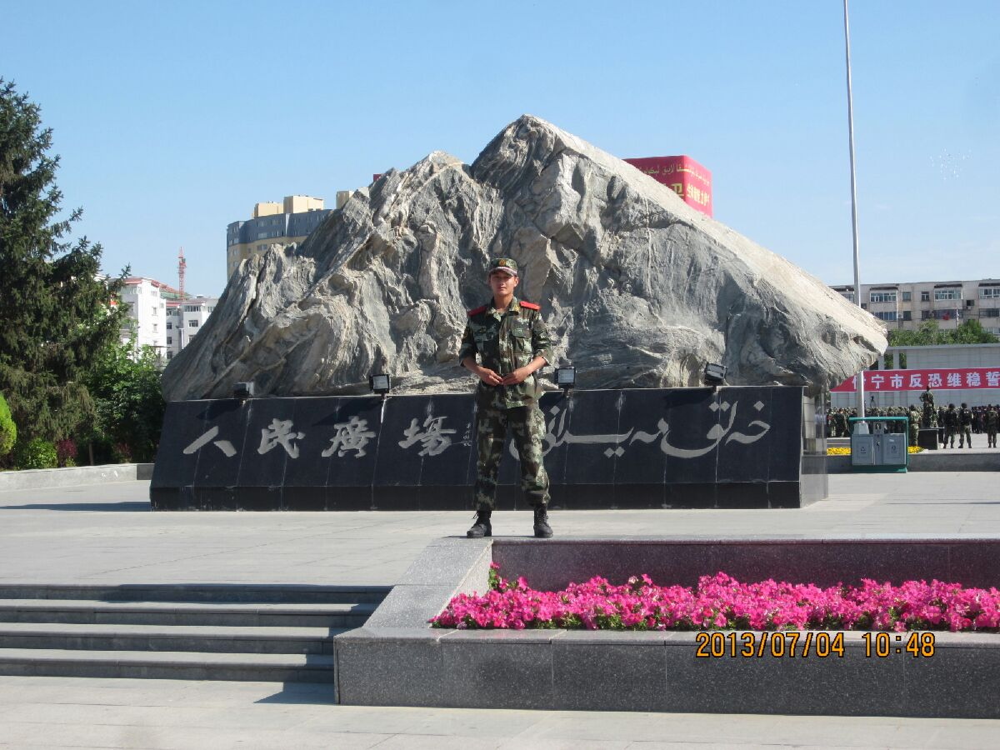

情景再现：
2012年6月24日
今天，我就要离开教导队了，有些兴奋，有些遗憾，三、四大队向来就爱比这比那，谁也不肯落后，但至少在教导队，我们相处还是比较融洽的，当进行汇报表演时，我突然发现政委的肩上似乎多了颗星星，真快！临行前，我向八中队的徐明强道别：“再见，徐先生 ，咱们40天后再见！”徐明强（山东人，1987年），山东大学毕业后参军，年龄比我大两岁，体能素质确实不错，为人处事较为成熟，我很欣赏他。（事实上也确实如此，当我们退伍时，他已经提干成排长了，只是可惜不知道他在哪个中队），当我乘着六平车颠簸着回到机关大院的时候，突然发现我们的营区已经被拆的面目全非了，所有人都住进了车库，条件可能艰苦了些。当我提着好些行李到达车库门口时，却发现没有几个人，于是我问计守亮（马鞍山人，1990年）中队的行踪，他说中队全部出去半年考核去了，顿时我心里的一块石头落了地，在教导队受苦受累，终于逃过一劫.......
2012年6月30日
今天比较闲，所以会想些事。
可能在一年前，又或者是两年前，我也写过类似的文章，今天，我还是要写，因为在不同的时间，不同地点，不同的心情下写出的感觉也一定是不同的。
我上高中时，是个不折不扣的混账，不住校，每天在上六点半骑自行车上学，晚上十一点才回家，一天17个小时不在家，大半夜还在路上与人闲逛，甚至跑到网吧玩游戏，后来考上大学，每年初春、新秋坐火车，随着拥挤的人流上学，仲夏、大寒坐火车回家，算算日子，不在家的日子有将近300天。现在如同被劳改一般，每天待在中队营区，训练、整理内务.....同样也是三点一线的生活，不在家的时间大约超过700天，电话也只是每星期打一次，每次都一定会打给两个人——爸爸一个、妈妈一个，只为告诉他们：我现在很好.....当挂下电话，内心的伤感久久不能散去，于是我知道了什么叫想家，什么叫爸妈。
上大学之前，谈恋爱要偷偷摸摸、遮遮掩掩，不能见光，上大学后，单身的要偷偷摸摸遮遮掩掩、不能见光，于是我明白：有些事啊，自己要把握好。
中学时下了晚自习，浩浩荡荡一大群同学结伴骑车回家，聊天、飚车、大喊，为了多闹一会儿，绕远路也甘愿。大学里下了课，回寝室的回寝室，忙兼职的忙兼职，陪女友的忙着接女友，笑着骂完他们，然后去图书馆五楼机房打游戏。于是我总结了：笑这个寂寞，笑那个寂寞，其实自己才真正经历着寂寞。高中的时候只看本地的天气预报，大学时看两个城市的天气预报，一个一定是家里的天气，现在看的就比较多了，除了老家的、淮南的、池州的、苏州的、还有上海的、合肥的、巢湖的.......因为，我明白了，走的再远，我还是挂念着你们呢。